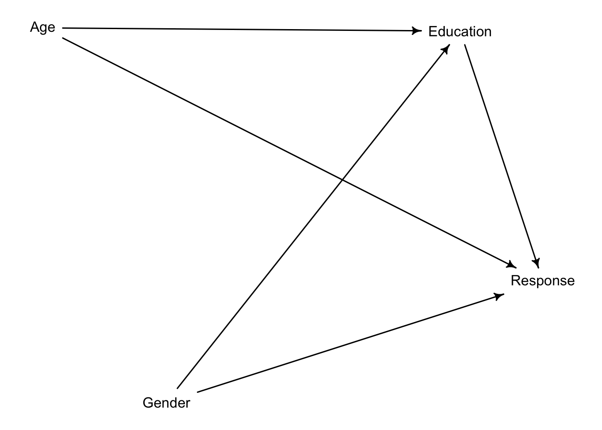
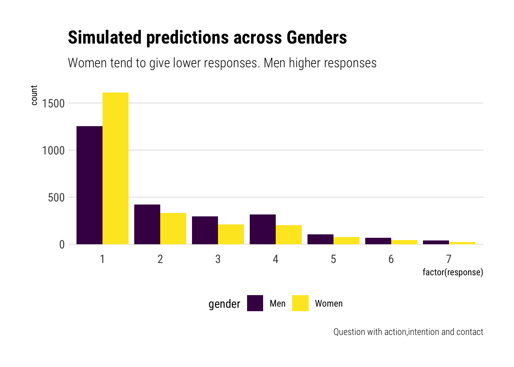

Statistical Rethinking: Week 7
This week paid off. All the hard work of understanding link functions, HMC flavored Monte-Carlo, and GLM allowed to study more complex models. To keep using Richard’s metaphor: it allowed us to study monsters: models with different parts made out of different models. In particular, Zero Inflated Models and Ordered Categories.
Homework
In the Trolley data—data(Trolley)—we saw how education level (modeled as an ordered category) is associated with responses. Is this association causal? One plausible confound is that education is also associated with age, through a causal process: People are older when they finish school than when they begin it. Reconsider the Trolley data in this light. Draw a DAG that represents hypothetical causal relationships among response, education, and age. Which statical model or models do you need to evaluate the causal influence of education on responses? Fit these models to the trolley data. What do you conclude about the causal relationships among these three variables?
Let’s begin by drawing the DAG
According to our assumptions, we cannot evaluate the causal effect of Education on response without first performing statistical adjustments on our models by including Age. Otherwise, Education will pick up some of the effect of Age on response, thereby biasing our estimates. That is, there is a backdoor leading back to Education. To close it, we must include Age in our estimates. Our computer can confirm our reasoning:
{ Age }Rows: 9,930
Columns: 12
$ case <fct> cfaqu, cfbur, cfrub, cibox, cibur, cispe, fkaqu, fkboa, fkbo…
$ response <int> 4, 3, 4, 3, 3, 3, 5, 4, 4, 4, 4, 4, 4, 5, 4, 4, 4, 4, 4, 3, …
$ order <int> 2, 31, 16, 32, 4, 9, 29, 12, 23, 22, 27, 19, 14, 3, 18, 15, …
$ id <fct> 96;434, 96;434, 96;434, 96;434, 96;434, 96;434, 96;434, 96;4…
$ age <int> 14, 14, 14, 14, 14, 14, 14, 14, 14, 14, 14, 14, 14, 14, 14, …
$ male <int> 0, 0, 0, 0, 0, 0, 0, 0, 0, 0, 0, 0, 0, 0, 0, 0, 0, 0, 0, 0, …
$ edu <fct> Middle School, Middle School, Middle School, Middle School, …
$ action <int> 0, 0, 0, 0, 0, 0, 1, 1, 1, 1, 1, 1, 1, 0, 0, 0, 0, 0, 1, 1, …
$ intention <int> 0, 0, 0, 1, 1, 1, 0, 0, 0, 0, 0, 0, 0, 0, 0, 0, 0, 0, 1, 1, …
$ contact <int> 1, 1, 1, 1, 1, 1, 0, 0, 0, 0, 0, 0, 0, 0, 0, 0, 0, 0, 0, 0, …
$ story <fct> aqu, bur, rub, box, bur, spe, aqu, boa, box, bur, car, spe, …
$ action2 <int> 1, 1, 1, 1, 1, 1, 1, 1, 1, 1, 1, 1, 1, 0, 0, 0, 0, 0, 1, 1, …Let’s begin by preparing our variables:
- age. We will model it as a continuous parameter.

- education. We will model it as an ordered category.
[1] "Bachelor's Degree" "Elementary School" "Graduate Degree"
[4] "High School Graduate" "Master's Degree" "Middle School"
[7] "Some College" "Some High School" However, R has read automatically order the factors in alphabetical order. Let’s order them in the order we need
[1] "Elementary School" "Middle School" "Some High School"
[4] "High School Graduate" "Some College" "Bachelor's Degree"
[7] "Master's Degree" "Graduate Degree" Now, we can turn them into integers and we’ll know they will be kept in the order we need them to be:
edu_int edu_releveled edu n
1 1 Elementary School Elementary School 60
2 2 Middle School Middle School 120
3 3 Some High School Some High School 420
4 4 High School Graduate High School Graduate 870
5 5 Some College Some College 2460
6 6 Bachelor's Degree Bachelor's Degree 3540
7 7 Master's Degree Master's Degree 1410
8 8 Graduate Degree Graduate Degree 1050Before we use the model, let’s verify that we haven’t missing values:
[1] 9930[1] 9930There are no missing obs to worry about. As a last step, let’s see what we would get if weren’t performing statistical adjustments by the type of questions nor by the education level of the respondents:
Let’s code and fit the model:
Running MCMC with 5 parallel chains, with 1 thread(s) per chain...
Chain 1 Iteration: 1 / 1000 [ 0%] (Warmup)
Chain 2 Iteration: 1 / 1000 [ 0%] (Warmup)
Chain 3 Iteration: 1 / 1000 [ 0%] (Warmup)
Chain 4 Iteration: 1 / 1000 [ 0%] (Warmup)
Chain 5 Iteration: 1 / 1000 [ 0%] (Warmup)
Chain 1 Iteration: 100 / 1000 [ 10%] (Warmup)
Chain 2 Iteration: 100 / 1000 [ 10%] (Warmup)
Chain 3 Iteration: 100 / 1000 [ 10%] (Warmup)
Chain 5 Iteration: 100 / 1000 [ 10%] (Warmup)
Chain 4 Iteration: 100 / 1000 [ 10%] (Warmup)
Chain 2 Iteration: 200 / 1000 [ 20%] (Warmup)
Chain 1 Iteration: 200 / 1000 [ 20%] (Warmup)
Chain 3 Iteration: 200 / 1000 [ 20%] (Warmup)
Chain 5 Iteration: 200 / 1000 [ 20%] (Warmup)
Chain 2 Iteration: 300 / 1000 [ 30%] (Warmup)
Chain 4 Iteration: 200 / 1000 [ 20%] (Warmup)
Chain 1 Iteration: 300 / 1000 [ 30%] (Warmup)
Chain 3 Iteration: 300 / 1000 [ 30%] (Warmup)
Chain 5 Iteration: 300 / 1000 [ 30%] (Warmup)
Chain 4 Iteration: 300 / 1000 [ 30%] (Warmup)
Chain 2 Iteration: 400 / 1000 [ 40%] (Warmup)
Chain 1 Iteration: 400 / 1000 [ 40%] (Warmup)
Chain 3 Iteration: 400 / 1000 [ 40%] (Warmup)
Chain 5 Iteration: 400 / 1000 [ 40%] (Warmup)
Chain 2 Iteration: 500 / 1000 [ 50%] (Warmup)
Chain 2 Iteration: 501 / 1000 [ 50%] (Sampling)
Chain 4 Iteration: 400 / 1000 [ 40%] (Warmup)
Chain 1 Iteration: 500 / 1000 [ 50%] (Warmup)
Chain 1 Iteration: 501 / 1000 [ 50%] (Sampling)
Chain 3 Iteration: 500 / 1000 [ 50%] (Warmup)
Chain 3 Iteration: 501 / 1000 [ 50%] (Sampling)
Chain 2 Iteration: 600 / 1000 [ 60%] (Sampling)
Chain 1 Iteration: 600 / 1000 [ 60%] (Sampling)
Chain 5 Iteration: 500 / 1000 [ 50%] (Warmup)
Chain 5 Iteration: 501 / 1000 [ 50%] (Sampling)
Chain 3 Iteration: 600 / 1000 [ 60%] (Sampling)
Chain 4 Iteration: 500 / 1000 [ 50%] (Warmup)
Chain 4 Iteration: 501 / 1000 [ 50%] (Sampling)
Chain 2 Iteration: 700 / 1000 [ 70%] (Sampling)
Chain 1 Iteration: 700 / 1000 [ 70%] (Sampling)
Chain 5 Iteration: 600 / 1000 [ 60%] (Sampling)
Chain 3 Iteration: 700 / 1000 [ 70%] (Sampling)
Chain 4 Iteration: 600 / 1000 [ 60%] (Sampling)
Chain 1 Iteration: 800 / 1000 [ 80%] (Sampling)
Chain 2 Iteration: 800 / 1000 [ 80%] (Sampling)
Chain 5 Iteration: 700 / 1000 [ 70%] (Sampling)
Chain 3 Iteration: 800 / 1000 [ 80%] (Sampling)
Chain 4 Iteration: 700 / 1000 [ 70%] (Sampling)
Chain 1 Iteration: 900 / 1000 [ 90%] (Sampling)
Chain 2 Iteration: 900 / 1000 [ 90%] (Sampling)
Chain 5 Iteration: 800 / 1000 [ 80%] (Sampling)
Chain 3 Iteration: 900 / 1000 [ 90%] (Sampling)
Chain 4 Iteration: 800 / 1000 [ 80%] (Sampling)
Chain 1 Iteration: 1000 / 1000 [100%] (Sampling)
Chain 1 finished in 1221.1 seconds.
Chain 2 Iteration: 1000 / 1000 [100%] (Sampling)
Chain 2 finished in 1227.9 seconds.
Chain 5 Iteration: 900 / 1000 [ 90%] (Sampling)
Chain 3 Iteration: 1000 / 1000 [100%] (Sampling)
Chain 3 finished in 1237.8 seconds.
Chain 4 Iteration: 900 / 1000 [ 90%] (Sampling)
Chain 5 Iteration: 1000 / 1000 [100%] (Sampling)
Chain 5 finished in 1273.5 seconds.
Chain 4 Iteration: 1000 / 1000 [100%] (Sampling)
Chain 4 finished in 1281.1 seconds.
All 5 chains finished successfully.
Mean chain execution time: 1248.3 seconds.
Total execution time: 1281.4 seconds.The chains look healthy enough; although the number of effective samples seems terribly slow for the total effect of education. Also, there’s the Stan warning message. Maybe one should try to run the model a bit longer. Note that the paths, during warmup exclusively, wander around in some chains on some presumably not typical set parts of the parameter space. However, this transient like behavior quickly stops and it is never present during sampling.
mean sd 5.5% 94.5% n_eff Rhat4
kappa[1] -2.40980142 0.07631585 -2.53447555 -2.29064580 1209.842 1.0005148
kappa[2] -1.71487666 0.07426259 -1.83246110 -1.59697275 1196.452 1.0004060
kappa[3] -1.12127199 0.07296840 -1.23552065 -1.00379345 1206.023 1.0003597
kappa[4] -0.08792258 0.07183468 -0.19972794 0.02959908 1223.252 1.0004976
kappa[5] 0.58314558 0.07241557 0.46958480 0.69982295 1243.306 1.0004691
kappa[6] 1.48641206 0.07499928 1.36691670 1.60971435 1294.911 1.0003917
bIC -1.25482654 0.09641519 -1.40823995 -1.10109895 1592.040 1.0033685
bIA -0.45191163 0.07873589 -0.58032757 -0.32724275 1531.498 1.0020863
bI -0.27130468 0.05617661 -0.36041274 -0.18256063 1375.417 1.0045916
bAge -0.10612173 0.01960340 -0.13762106 -0.07446687 2881.420 0.9993960
bE 0.29021678 0.07860667 0.17066931 0.41466910 1235.761 1.0002091
bC -0.32300800 0.06847975 -0.43346993 -0.21317939 1783.069 1.0027797
bA -0.45373700 0.05189077 -0.53737928 -0.36990367 1866.863 1.0013140
delta[1] 0.11883917 0.07300123 0.02770316 0.25202713 3703.875 0.9998998
delta[2] 0.13664603 0.07902661 0.03497736 0.27997437 3296.719 0.9997046
delta[3] 0.08227563 0.05221710 0.01903524 0.18013100 3530.285 0.9999000
delta[4] 0.05681726 0.04121216 0.01066274 0.12948807 2572.711 1.0002676
delta[5] 0.44516349 0.10474074 0.27986451 0.60637022 2219.672 0.9985959
delta[6] 0.07323684 0.04816609 0.01594991 0.16075218 2587.867 0.9995390
delta[7] 0.08702158 0.05633486 0.01825699 0.18928007 3123.487 0.9989435Compared to the model that had no adjustment by age, the Education coefficient has changed. Whereas before the coefficient was negative, here it is positive. Thus, we conclude: 1) Due to change in the coefficient, we believe that indeed there is a path between education and age. 2) Indicating that higher education leads to respond higher in the scale, indicating that they see the moral actions as more permissible. 3) Also, older people seem to respond lower in the scale and thus considering the actions less morally permisible.
Let’s plot the predicted differences:
List of 9
$ kappa: num [1:2500, 1:6] -2.47 -2.38 -2.52 -2.42 -2.38 ...
$ bIC : num [1:2500(1d)] -1.13 -1.24 -1.17 -1.19 -1.16 ...
$ bIA : num [1:2500(1d)] -0.391 -0.615 -0.439 -0.41 -0.531 ...
$ bI : num [1:2500(1d)] -0.373 -0.21 -0.328 -0.238 -0.31 ...
$ bAge : num [1:2500(1d)] -0.131 -0.115 -0.113 -0.105 -0.132 ...
$ bE : num [1:2500(1d)] 0.31 0.279 0.358 0.218 0.281 ...
$ bC : num [1:2500(1d)] -0.346 -0.343 -0.374 -0.39 -0.316 ...
$ bA : num [1:2500(1d)] -0.473 -0.43 -0.49 -0.492 -0.324 ...
$ delta: num [1:2500, 1:7] 0.065 0.1331 0.0247 0.1584 0.0516 ...
- attr(*, "source")= chr "ulam posterior: 2500 samples from object"Let’s add the zero to the delta:
Now, let’s write some functions to work with the samples from the posterior:
As we gauged from the coefficient, we predict that, on average, older people respond lower lower on the response scale. Above, for an action with both intention and contact, the difference is very clear: older people respond more often with lower values of moral permissibility, whereas younger people respond more often with higher values of moral permissibility.
Let’s check the difference across education levels:
To conclude the question:
- Older people tend to assign lower levels of moral permissibility.
- More educated people tend to assign higher levels of moral permisibility.
- Age and education level seem correlated. Thus, without accounting for age, education level will pick up some of the effects of age on responses.
Consider one more variable in the Trolley data: Gender. Suppose that gender might influence education as well as response directly. Draw the DAG now that includes response, education, age, and gender. Using only the DAG, is it possible that the inferences from Problem 1 are confounded by gender? If so,define any additional models you need to infer the causal influence of education on response. What do you conclude?

Yes, according to our current DAG, inferences from problem 1 are confounded. By including Education in our statistical adjustments, we are conditioning on a collider and thereby opening a backdoor: Education will pick up the effect of gender on response. Therefore, if we wish to infer the influence of education on response, we must perform a statistical adjustment with Gender.
{ Age, Gender }We will include gender with an index variable:
Let’s first try to gauge what we would get if we weren’t performing statistical adjustment by other covariates:
Now, let’s fit the model:
Running MCMC with 5 parallel chains, with 1 thread(s) per chain...
Chain 1 Iteration: 1 / 1000 [ 0%] (Warmup)
Chain 2 Iteration: 1 / 1000 [ 0%] (Warmup)
Chain 3 Iteration: 1 / 1000 [ 0%] (Warmup)
Chain 5 Iteration: 1 / 1000 [ 0%] (Warmup)
Chain 4 Iteration: 1 / 1000 [ 0%] (Warmup)
Chain 4 Iteration: 100 / 1000 [ 10%] (Warmup)
Chain 2 Iteration: 100 / 1000 [ 10%] (Warmup)
Chain 5 Iteration: 100 / 1000 [ 10%] (Warmup)
Chain 3 Iteration: 100 / 1000 [ 10%] (Warmup)
Chain 1 Iteration: 100 / 1000 [ 10%] (Warmup)
Chain 2 Iteration: 200 / 1000 [ 20%] (Warmup)
Chain 4 Iteration: 200 / 1000 [ 20%] (Warmup)
Chain 3 Iteration: 200 / 1000 [ 20%] (Warmup)
Chain 5 Iteration: 200 / 1000 [ 20%] (Warmup)
Chain 1 Iteration: 200 / 1000 [ 20%] (Warmup)
Chain 3 Iteration: 300 / 1000 [ 30%] (Warmup)
Chain 4 Iteration: 300 / 1000 [ 30%] (Warmup)
Chain 2 Iteration: 300 / 1000 [ 30%] (Warmup)
Chain 5 Iteration: 300 / 1000 [ 30%] (Warmup)
Chain 1 Iteration: 300 / 1000 [ 30%] (Warmup)
Chain 3 Iteration: 400 / 1000 [ 40%] (Warmup)
Chain 4 Iteration: 400 / 1000 [ 40%] (Warmup)
Chain 2 Iteration: 400 / 1000 [ 40%] (Warmup)
Chain 5 Iteration: 400 / 1000 [ 40%] (Warmup)
Chain 1 Iteration: 400 / 1000 [ 40%] (Warmup)
Chain 3 Iteration: 500 / 1000 [ 50%] (Warmup)
Chain 3 Iteration: 501 / 1000 [ 50%] (Sampling)
Chain 2 Iteration: 500 / 1000 [ 50%] (Warmup)
Chain 2 Iteration: 501 / 1000 [ 50%] (Sampling)
Chain 5 Iteration: 500 / 1000 [ 50%] (Warmup)
Chain 5 Iteration: 501 / 1000 [ 50%] (Sampling)
Chain 4 Iteration: 500 / 1000 [ 50%] (Warmup)
Chain 4 Iteration: 501 / 1000 [ 50%] (Sampling)
Chain 1 Iteration: 500 / 1000 [ 50%] (Warmup)
Chain 1 Iteration: 501 / 1000 [ 50%] (Sampling)
Chain 2 Iteration: 600 / 1000 [ 60%] (Sampling)
Chain 5 Iteration: 600 / 1000 [ 60%] (Sampling)
Chain 3 Iteration: 600 / 1000 [ 60%] (Sampling)
Chain 4 Iteration: 600 / 1000 [ 60%] (Sampling)
Chain 1 Iteration: 600 / 1000 [ 60%] (Sampling)
Chain 2 Iteration: 700 / 1000 [ 70%] (Sampling)
Chain 5 Iteration: 700 / 1000 [ 70%] (Sampling)
Chain 3 Iteration: 700 / 1000 [ 70%] (Sampling)
Chain 4 Iteration: 700 / 1000 [ 70%] (Sampling)
Chain 1 Iteration: 700 / 1000 [ 70%] (Sampling)
Chain 2 Iteration: 800 / 1000 [ 80%] (Sampling)
Chain 5 Iteration: 800 / 1000 [ 80%] (Sampling)
Chain 4 Iteration: 800 / 1000 [ 80%] (Sampling)
Chain 3 Iteration: 800 / 1000 [ 80%] (Sampling)
Chain 1 Iteration: 800 / 1000 [ 80%] (Sampling)
Chain 5 Iteration: 900 / 1000 [ 90%] (Sampling)
Chain 2 Iteration: 900 / 1000 [ 90%] (Sampling)
Chain 4 Iteration: 900 / 1000 [ 90%] (Sampling)
Chain 1 Iteration: 900 / 1000 [ 90%] (Sampling)
Chain 5 Iteration: 1000 / 1000 [100%] (Sampling)
Chain 5 finished in 2405.7 seconds.
Chain 3 Iteration: 900 / 1000 [ 90%] (Sampling)
Chain 2 Iteration: 1000 / 1000 [100%] (Sampling)
Chain 2 finished in 2421.8 seconds.
Chain 4 Iteration: 1000 / 1000 [100%] (Sampling)
Chain 4 finished in 2500.8 seconds.
Chain 1 Iteration: 1000 / 1000 [100%] (Sampling)
Chain 1 finished in 2515.9 seconds.
Chain 3 Iteration: 1000 / 1000 [100%] (Sampling)
Chain 3 finished in 2541.7 seconds.
All 5 chains finished successfully.
Mean chain execution time: 2477.2 seconds.
Total execution time: 2542.1 seconds.Let’s check the traceplots of our chains:
mean sd 5.5% 94.5% n_eff Rhat4
bIC -1.26222698 0.09563927 -1.41074770 -1.11361000 1474.4962 1.0029517
bIA -0.44224902 0.07749018 -0.56902660 -0.32144160 1379.1919 1.0011014
bI -0.28783297 0.05548265 -0.37528620 -0.19835261 1184.6262 1.0019602
bAge -0.07248551 0.02178785 -0.10676978 -0.03744601 1256.6172 0.9998830
bE 0.04806116 0.15049454 -0.20515563 0.26088915 633.9650 1.0010820
bC -0.34144399 0.06682613 -0.44986452 -0.23195024 1486.2202 1.0018834
bA -0.47192368 0.05198801 -0.55570593 -0.38783936 1430.7327 1.0002398
bGender[1] 0.25767990 0.19853134 -0.05838659 0.57397892 873.4987 1.0006516
bGender[2] 0.82169908 0.19885860 0.50228403 1.13746555 813.2591 1.0004183
delta[1] 0.14271785 0.09071624 0.02994543 0.30946166 2765.3540 0.9993168
delta[2] 0.14430729 0.08713521 0.03617260 0.30389157 2700.6726 0.9995506
delta[3] 0.13050518 0.08342718 0.03009101 0.28879109 1870.8427 1.0001615
delta[4] 0.12275620 0.08961734 0.02284280 0.29555093 1355.8506 0.9997193
delta[5] 0.21254299 0.15103173 0.02559998 0.48118750 671.0591 1.0024846
delta[6] 0.11936824 0.08260875 0.02197871 0.27901172 1602.1946 1.0031488
delta[7] 0.12780225 0.08041071 0.02754787 0.27423736 3116.7440 0.9997262It seems that the coefficient for men is considerably higher than the coefficient for women. That is, on the relative scale, women are more likely to give lower moral permissibility to the different situations. Interestingly, the coefficient for Education has greatly reduced, and now it encompasses zero right in the middle. Therefore, by performing statistical adjustment with gender, the Education coefficient has greatly decreased.
Indeed, let’s check the difference across education levels.
Let’s modify our functions to simulate from our model now including a gender intercept:
Let’s extract samples:
And finally simulate:
As expected, now that we are performing a statistical adjustment by Gender, the influence of education level on response has greatly reduced. In fact, it has reduced so much that our model predicts barely any difference response levels across educations. Let’s do the same plot but for men:
It seems that Gender is driving the variation in responses in the sample. To see this, let’s simulate the differnce by gender for the most highly educated and older people in the sample:

Let’s plot our simulations for yet another situation, this time a situation with both action, intent and contact:

Therefore, we can conclude that, among the covariates studied, the greatest variation across responses is found on gender. Regardless of education level, women, on average, regard the different acts as much less morally permissible than men.